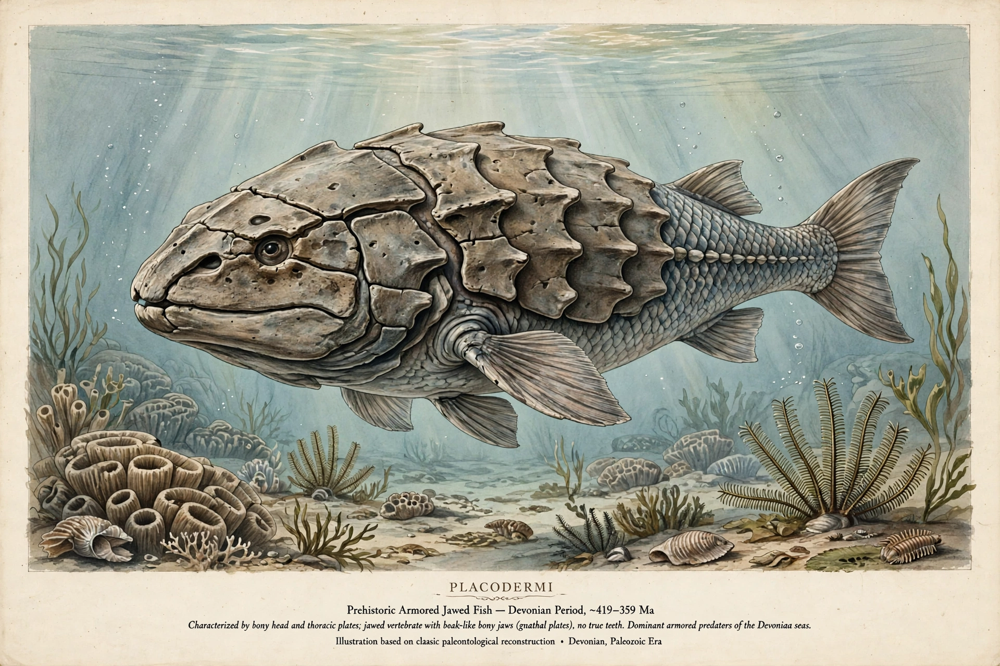

Placodermi is a class of armoured prehistoric fish, known from fossils, which lived from the Silurian to the end of the Devonian period. Their head and thorax were covered by articulated armoured plates and the rest of the body was scaly or naked, depending on the species.
| Placodermi Fossil range: Silurian – Devonian, 439–358.9 Ma | |
|---|---|
 | |
| Kingdom | Animalia |
| Phylum | Chordata |
| Class | †Placodermi McCoy, 1848 |
Placoderms were among the first jawed vertebrates (gnathostomes). Many, like the giant Dunkleosteus, were apex predators. Unlike modern fish, they lacked true teeth, instead using sharpened edges of dermal plates as biting surfaces.
They first appeared in the Silurian, diversified greatly in the Devonian — the “Age of Fishes” — and were wiped out during the Late Devonian extinctions. See also Devonian and Dunkleosteus.
Major orders include Antiarchi, Arthrodira, Petalichthyida, Phyllolepida, Ptyctodontida, Rhenanida, Acanthothoraci and Pseudopetalichthyida.